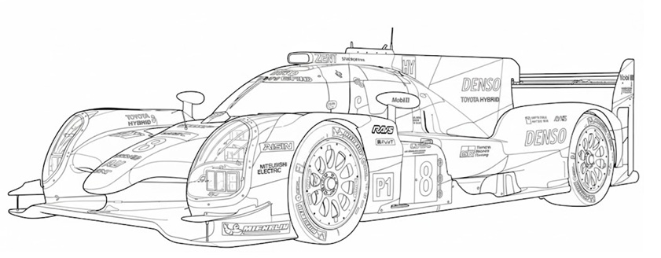

Breve introducción al idioma japones.
- Saludos y despedidas.
- Hiragana y katakana.
- Kanjis básicos.
- Estructura de las oraciones.

Toyota TS050 Hybrid, pueden correr a más de 330 km/h durante 24 horas seguidas.
¿Que es la mecánica automotriz japonesa?
Es conjunto de prácticas, filosofía y tecnología que caracteriza a la
industria automotriz de Japón.
Se puede entender en varios niveles:
Filosofía y cultura del trabajo
- Kaizen (mejora continua)
- Disciplina y precisión
- Orientación al cliente
Innovación tecnológica
Las marcas japonesas (Toyota, Honda, Nissan, Mazda, Subaru, Mitsubishi) son reconocidas por su fiabilidad y por introducir tecnologías que luego se vuelven estándar en el mundo.
Identidad de mercado
En países como Colombia, México o Brasil, los autos japoneses tienen gran popularidad por su durabilidad y bajo costo de mantenimiento.
Enfoque práctico
La mecánica japonesa se asocia con manuales técnicos muy detallados, que reflejan la misma lógica que ves en el idioma japonés: estructuras claras, precisas y funcionales.
Historia y filosofía de la ingeniería japonesa (Toyota Production System, Kaizen)
Toyota Production System (TPS) 1940s–1970s
Desarrollado por Sakichi Toyoda (fundador de Toyota), su hijo Kiichiro Toyoda y el ingeniero Taiichi Ohno. Después de la Segunda Guerra Mundial, tenía recursos limitados y no podían producir en masa, así que buscaron un sistema más eficiente.
Just-in-Time (JIT): producir solo lo necesario evitando inventarios excesivos.
Jidoka: automatización con un toque humano, las máquinas se detienen solas
si detectan un problema, para garantizar calidad.
Este sistema se convirtió en la base del Lean
Manufacturing, que hoy usan empresas de todo el mundo.
Filosofía Kaizen
En Toyota cada trabajador puede proponer mejoras en su área, aunque sean pequeñas. La suma de esos cambios incrementa la eficiencia y la calidad.
El concepto de Kaizen se escribe en japonés de la siguiente forma.
改 (Kai) = cambio o reforma.
善 (Zen) = significa bueno, virtuoso, para mejor.
改善 (Kaizen) = mejora continua.
Principios básicos de mecánica aplicados a autos japoneses
Motor y combustión interna
Comprender cómo se genera la energía a partir de la mezcla aire-combustible. En Japón se enfatiza la eficiencia energética y la reducción de emisiones (ejemplo: motores híbridos Toyota).
Transmisión y embrague
Transferencia de potencia del motor a las ruedas. Innovaciones japonesas: cajas CVT (Transmisión Variable Continua) que ofrecen suavidad y ahorro de combustible.
Sistema de frenos
Principio físico: fricción para detener el movimiento. Japón ha desarrollado frenos ABS y sistemas de asistencia electrónica muy confiables.
Suspensión y dirección
Mantener estabilidad y confort en la conducción. Los autos japoneses destacan por suspensiones duraderas y dirección precisa, pensadas para seguridad y comodidad.
Sistema eléctrico y electrónico
Desde batería y alternador hasta sensores modernos. Japón lidera en integración de electrónica avanzada: sensores de oxígeno, control de emisiones, sistemas híbridos.
Mantenimiento preventivo (Kaizen aplicado)
Revisiones periódicas para evitar fallas mayores. Filosofía japonesa: cada detalle cuenta, se busca prolongar la vida útil del vehículo con disciplina y constancia.
Mientras en Occidente la mecánica suele enfocarse en potencia y rendimiento, la mecánica japonesa prioriza fiabilidad, eficiencia y durabilidad, aplicando la filosofía de mejora continua (Kaizen) en cada sistema.
Glosario Técnico Trilingüe
Muchos términos técnicos japoneses son préstamos del inglés escritos en katakana (エンジン enjin, バッテリー batterī). Otros son kanji originales del japonés técnico (部品 buhin = repuesto, 整備 seibi = mantenimiento). Esto refleja cómo Japón integra vocabulario extranjero con su propia lógica lingüística.
| Español | Inglés | Japonés (Kanji/Katakana) | Lectura (romaji) |
|---|---|---|---|
| Motor | Engine | エンジン | enjin |
| Transmisión | Transmission | トランスミッション | toransumisshon |
| Frenos | Brakes | ブレーキ | burēki |
| Suspensión | Suspension | サスペンション | sasupenshon |
| Neumático | Tire | タイヤ | taiya |
| Batería | Battery | バッテリー | batterī |
| Alternador | Alternator | オルタネーター | orutanētā |
| Aceite | Oil | オイル | oiru |
| Filtro de aire | Air filter | エアフィルター | ea firutā |
| Radiador | Radiator | ラジエーター | rajētā |
| Repuesto/Pieza | Spare part | 部品 | buhin |
| Mantenimiento | Maintenance | 整備 | seibi |
| Inspección | Inspection | 点検 | tenken |
| Diagnóstico | Diagnosis | 診断 | shindan |
| Velocímetro | Speedometer | スピードメーター | supīdo mētā |
| Embrague | Clutch | クラッチ | kuracchi |
| Dirección | Steering | ステアリング | sutearingu |
| Suspensión trasera | Rear suspension | リアサスペンション | ria sasupenshon |
| Luces delanteras | Headlights | ヘッドライト | heddo raito |
| Carrocería | Bodywork | 車体 | shatai |
Tarjeta visual: Toyota Corolla, トヨタ・カローラ

| Letra | Español | Inglés | Japonés | Lectura (romaji) |
|---|---|---|---|---|
| A | Puerta | Door | ドア | doa |
| B | Maletero / Baúl | Trunk | トランク | toranku |
| C | Espejo lateral | Door mirror | ドアミラー | doa mirā |
| D | Limpiaparabrisas | Wiper | ワイパー | waipā |
| E | Boca de llenado de combustible | Fuel cap | 給油口 | kyūyuko |
| F | Llanta / Neumático | Tire | タイヤ | taiya |
| G | Capó | Bonnet / Hood | ボンネット | bonnetto |
| H | Faros delanteros, luces de posición, luces diurnas LED, direccionales | Headlamp, position lamp, LED daylight, turn signal | ヘッドランプ・車幅灯・LED デイライト★・方向指示灯 | heddo ranpu / shafutō / LED deiraito / hōkō shijitō |
| I | Direccional | Turn signal | 方向指示灯 | hōkō shijitō |
| J | Luz antiniebla delantera | Front fog lamp | フロントフォグランプ★ | furonto fogu ranpu |
| K | Luz trasera, luz de freno, direccional | Tail lamp, brake lamp, turn signal | 尾灯・制動灯・方向指示灯 | bitō / seidōtō / hōkō shijitō |
| L | Luz de placa | License plate lamp | 番号灯 | bangōtō |
| M | Luz antiniebla trasera | Rear fog lamp | リヤフォグランプ★ | riya fogu ranpu |
| N | Luz de retroceso | Reverse lamp | 後退灯 | kōtai tō |
El símbolo ★ suele indicar que es un equipamiento opcional en algunos modelos.